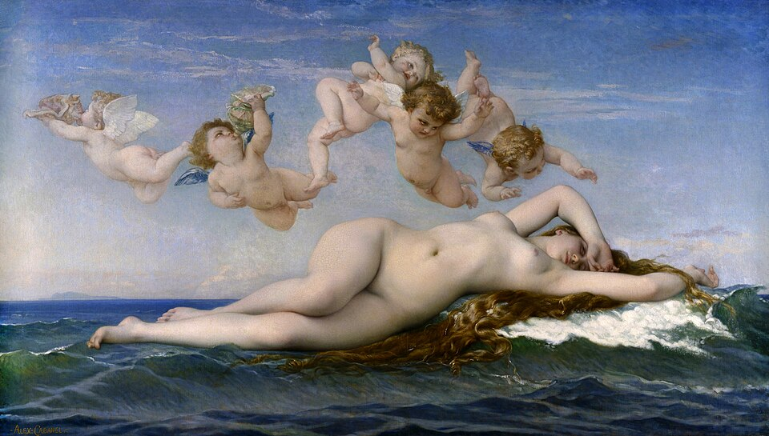
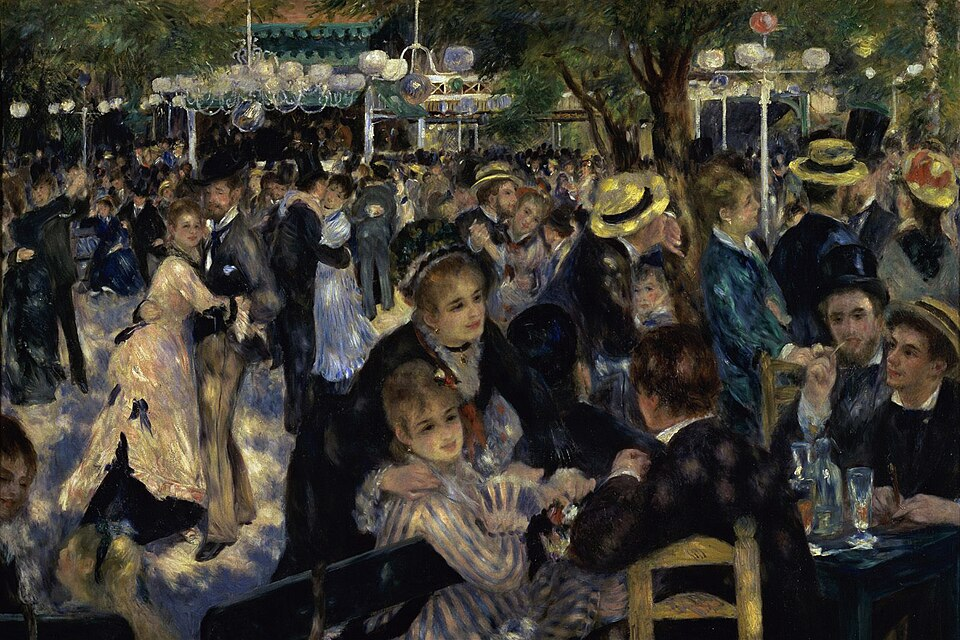
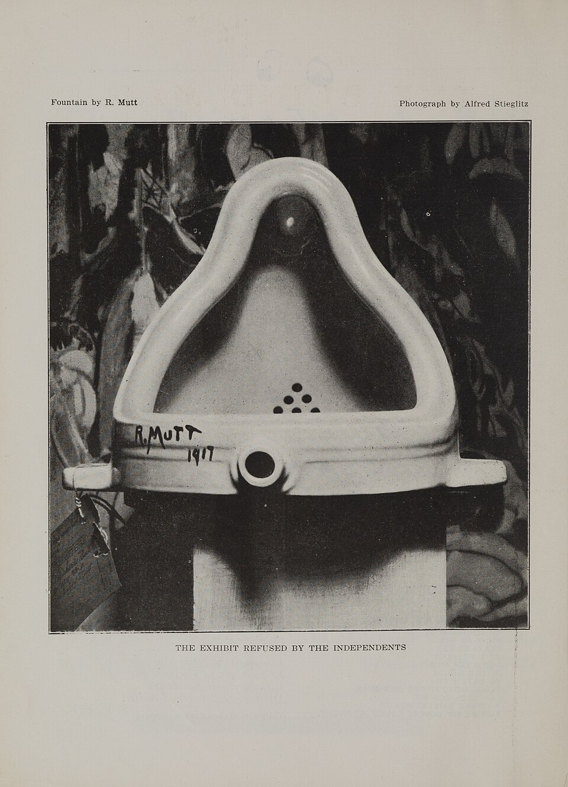
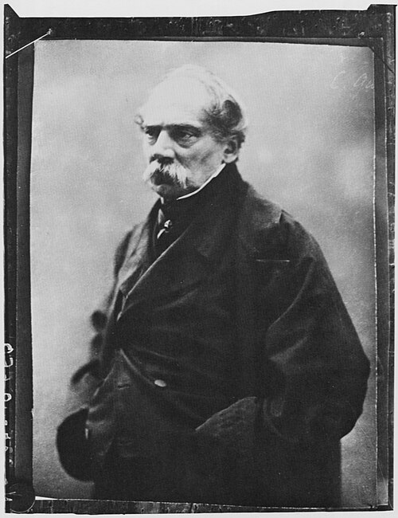
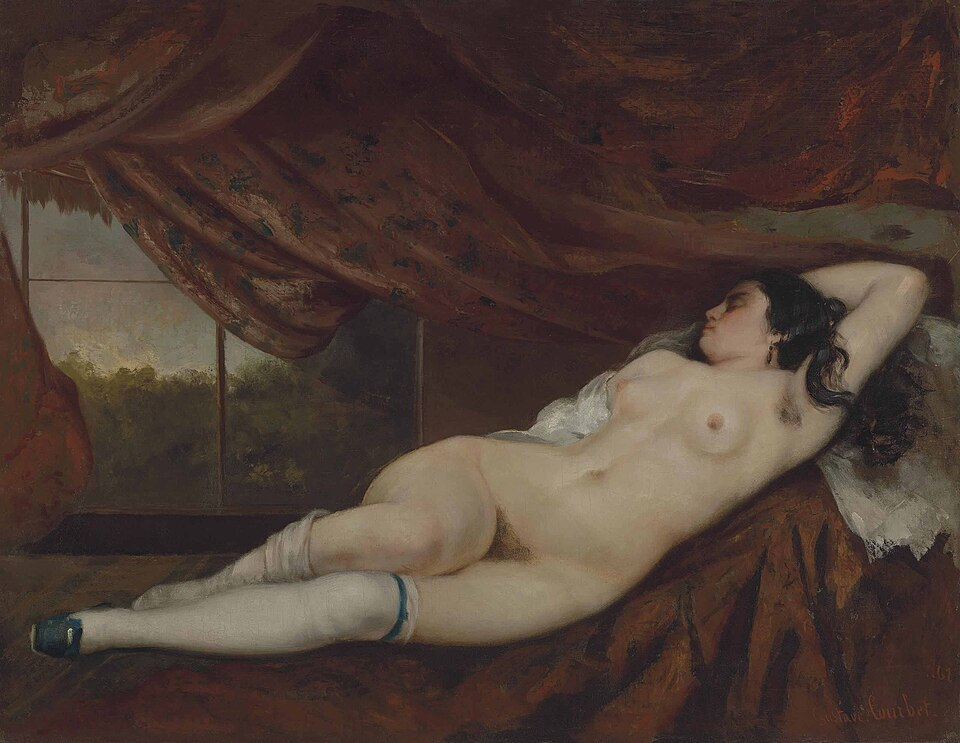

図解：そして現代へ
近代から現代へ
- 近世まで

アカデミーの序列神話・宗教の歴史画が頂点
永遠の絶対的な美 - 1863

 ボードレールの近代性ギースの現代生活を評価
ボードレールの近代性ギースの現代生活を評価
移ろう流行にも美がある - 19世紀後半

印象派が描く現在何をどう描きたいか
近代絵画の完成形とも - 1917

デュシャンの《泉》概念も芸術の範囲に
現代美術の始点は諸説
近世から近代へ何が変わったか
時代・モード・道徳・情熱主題神話・宗教・偉人同時代の現在
はかない現代生活描き方丁寧なデッサン激しい筆致と色彩
ドラクロワの例基準どう描くべきかどう描きたいか
重要人物
近代性を説いた人と画家
- シャルル・ボードレール詩人・評論家「モデルニテ」を提唱。『現代生活の画家』を著す

コンスタンタン・ギース風俗画家同時代の人々を描く。ボードレールが「G氏」と呼ぶ ウジェーヌ・ドラクロワ画家ロマン主義。色彩だけで分かるとボードレールが称賛
ウジェーヌ・ドラクロワ画家ロマン主義。色彩だけで分かるとボードレールが称賛 ギュスターヴ・モロー画家象徴主義。新しい動きの誕生を歓迎した
ギュスターヴ・モロー画家象徴主義。新しい動きの誕生を歓迎した
現代美術
近代性と相対的な美
モダン・アートとギースの同時代性
動画 0:30～近代美術は英語でモダン・アートと呼ばれます。その背景にあるのが、フランスの詩人・美術評論家シャルル・ボードレールの提唱した「モデルニテ」、近代性という概念です。彼の考える近代性は、フランス語で流行を意味する「モード」と結び付いていました。1863年の評論『現代生活の画家』では、画家コンスタンタン・ギースをたたえて、新しい美のあり方を示しました。
刊本の版と同一画像の利用条件が未確定。1863年は評論の初出年であり、この表紙の出版年と断定しない。別版で代用しない。
《現代生活の画家》
- 作者
- シャルル・ボードレール（著）
- 制作時期
- 不明
- 所在地・所蔵
- 版・所蔵先未確定
- 素材・形式
- 印刷書籍
- 原題
- Le Peintre de la vie moderne (Constantin Guys)
- 動画の年代
- 1863年（評論初出。画面の刊本の年は不明）
出典・画像について
動画の年代 1863年（評論初出。画面の刊本の年は不明） と確認済み掲載年代 不明 を分けて記録。
ギースは主にイギリスで活動したフランスの風俗画家です。人前で目立つことを極端に嫌い、表舞台にはほとんど出ませんでした。上流社会の貴婦人、カフェの常連客、売春婦など、さまざまな同時代の人々を描きます。ボードレールもその意向を尊重して「G氏」と呼びました。他の芸術家が軽蔑した役割を引き受け、現代生活のはかない、一時的な美の形を求めて各地を巡る、その性質を現代性と呼ぶ、という趣旨で評価したのです。
画像を拡大 ＋
《日傘をさす女性》
- 作者
- コンスタンタン・ギース
- 制作時期
- 1860～1865年
- 所在地・所蔵
- J・ポール・ゲティ美術館（2003.134）
- 素材・形式
- ペンと褐色インクの上に水彩
- 原題
- Woman with a Parasol
- 動画の年代
- 1860年代
出典・画像について
歴史画の永遠性とはかないものの美
動画 1:51～ボードレールがギースを評価した背景には、アカデミーが定めた絵画の序列があります。頂点の歴史画は、神話、宗教、偉大な人物を主題としました。現実の人々を描く風俗画は、それより低く位置付けられ、何を描くかで価値に差がありました。こうした序列は、君主や貴族中心の芸術観を受け継いだ結果とも考えられます。偉大な存在や物語を保存する永遠性、いわば絶対的な美が重視されていたのです。

《ヴィーナスの誕生》
- 作者
- アレクサンドル・カバネル
- 制作時期
- 1863年
- 所在地・所蔵
- オルセー美術館（RF 273）
- 素材・形式
- 油彩画
- 原題
- The Birth of Venus
出典・画像について


画像を拡大 ＋《横たわる裸婦（寝床の女性）》
- 作者
- ギュスターヴ・クールベ
- 制作時期
- 1862年
- 所在地・所蔵
- 個人蔵
- 素材・形式
- 油彩・カンヴァス
- 原題
- Femme nue couchée
出典・画像について
対してボードレールは、現代生活のはかないものにも美を見いだそうとしました。詩集『悪の華』にも、その転換が表れます。恋人との散歩で腐った死骸に出会い、今は美しい恋人もいずれ同じ姿になると語る詩が、その例です。従来の美しい題材だけにとどまらない、美の価値の転換でした。
相対的な美と「どう描くか」
動画 2:56～『現代生活の画家』では、美は永遠で普遍的な要素と、相対的・偶成的な要素からなると述べます。前者の量を定めるのは難しく、後者には時代、モード、道徳、情熱が含まれます。永遠普遍の美を重視する考えに対し、移ろう流行にも、相対的で偶成的な美があるとしたのです。何がきっかけで流行するかは分かりません。そのような現在を描くギースは、ボードレールの求める画家でした。
ボードレールはこの評論以前から「モデルヌ」という語を好み、ロマン主義のウジェーヌ・ドラクロワを称賛していました。《民衆を導く自由の女神》で知られるドラクロワは、激しい筆致と大胆な色彩で批判を受けます。伝統的な絵画が丁寧なデッサンと落ち着いた色を重視していたからです。対してボードレールは、主題ではなく色彩だけで彼の絵と分かると評価しました。定められた描き方から外れることが、モデルヌだったのです。
 画像を拡大 ＋
画像を拡大 ＋
《民衆を導く自由の女神》
- 作者
- ウジェーヌ・ドラクロワ
- 制作時期
- 1830年
- 所在地・所蔵
- ルーヴル美術館（RF129）
- 素材・形式
- 油彩画
- 原題
- La Liberté guidant le peuple
出典・画像について
描きたいものを描く時代へ
動画 4:28～何をどう描くべきかという基準から、何をどう描きたいかへ移ったことが、近世から近代への大きな転換でした。同時代の現在を、伝統から離れた方法で描いた印象派が、近代絵画の完成形といわれる理由もここにあります。ただし、その印象派も十数年で下火となりました。

《ムーラン・ド・ラ・ギャレットの舞踏会》
- 作者
- ピエール＝オーギュスト・ルノワール
- 制作時期
- 1876年
- 所在地・所蔵
- オルセー美術館（RF2739）
- 素材・形式
- 油彩・カンヴァス
- 原題
- Bal du moulin de la Galette
出典・画像について
ロマン主義を近代芸術の先駆けとすれば、19世紀前半から20世紀初頭までの約100年に、多くの芸術潮流が生まれました。古代から扱う本シリーズでも、解説37回のうち16回がこの短い時期に集中し、取り上げていない潮流を含めればさらに多くなります。絶対的な価値への反発から生まれた新しい芸術が、再び絶対的な基準となってはいけません。ドラクロワや象徴主義のモローも、新しい動きの誕生を歓迎しました。絶対的な美意識から相対的な美意識への転換が、近代美術だったのです。
芸術の範囲を概念へ広げる
コンテンポラリー・アートと概念
動画 5:41～現代美術はコンテンポラリー・アートといい、コンテンポラリーには「同時代の」という意味があります。先駆けとしてよく挙げられるのが、マルセル・デュシャンの《泉》です。既製の小便器に署名し、無審査を掲げる展覧会へ応募しながら展示を拒まれたことが、芸術とは何かという問いを広げました。視覚的なものだけでなく、概念まで芸術の範囲に含まれるようになったのです。

《泉（1917年原作の写真、『ザ・ブラインド・マン』第2号掲載）》
- 作者
- マルセル・デュシャン（作品）、アルフレッド・スティーグリッツ（写真）
- 制作時期
- 1917年
- 所在地・所蔵
- 原作は現存せず。掲載誌：メトロポリタン美術館図書館（100.51 B61 no.2）
- 素材・形式
- レディメイド作品を撮影した写真の雑誌掲載図版
- 原題
- Fountain
出典・画像について
1917年原作を撮影したStieglitz写真の掲載誌全頁スキャン。動画の写真切抜きとは表示範囲が異なる。
画像出典：アルフレッド・スティーグリッツ（写真）／マルセル・デュシャン（作品）／Metropolitan Museum of Art Libraries（掲載誌デジタル複製、CC0）
CC0 1.0
作品情報：作品・画像・利用条件 · 所蔵館の作品ページ
こうした方向の一つがコンセプチュアル・アートです。ジョセフ・コスースの《一つ、そして三つの椅子》では、実物の椅子、椅子の写真、椅子を説明する文章が並びます。物の見た目や美しさではなく、意味や概念を主題とする考え方です。哲学者テオドール・アドルノも、芸術に関しては、もはや自明なことが何一つないということが自明となった、と述べました。何が芸術かさえ、当然には決められなくなったのです。
設置個体と所蔵先、作品自体の自由利用条件が未確定。Commonsの写真CC BYだけでは作品の許諾と判断しない。
《一つ、そして三つの椅子》
- 作者
- ジョセフ・コスース
- 制作時期
- 1965年
- 所在地・所蔵
- 動画の設置個体・所蔵先未確定。比較資料：ニューヨーク近代美術館（393.1970.a-c）
- 素材・形式
- 木製椅子、椅子の写真、辞書の定義の写真
- 原題
- One and Three Chairs
出典・画像について
作品情報：作品・画像・利用条件 · 所蔵館の作品ページ
現代の区分と学び方
現代美術の始まりと学び方
動画 6:45～現代美術が《泉》から始まったと、単純には言えません。そこから広がるコンセプチュアル・アートも、現代美術の一つの側面です。《泉》の発表は1917年、日本では大正時代に当たり、既に100年以上前のものになります。「同時代」という語の意味からすると、この時代を現代と呼べるかは難しい問題です。
現代美術は、第二次世界大戦後、1945年以降を指すことが比較的多くあります。芸術の中心がフランスからアメリカへ明確に移ったことが、その理由とされます。一方、冷戦終結後や、2000年代以降を区切りとする見方もあり、始点は一様ではありません。
MoMAはPollock-Krasner Foundation / ARSの著作権を表示。ローカル保存・掲載の自由利用許諾を確認できない。米国内PDのみを世界全体の許諾と扱わない。
《ナンバー1A、1948》
- 作者
- ジャクソン・ポロック
- 制作時期
- 1948年
- 所在地・所蔵
- ニューヨーク近代美術館（77.1950）
- 素材・形式
- カンヴァスに油彩、エナメル塗料
- 原題
- Number 1A, 1948
出典・画像について
作品情報：作品・画像・利用条件 · 所蔵館の作品ページ
冷戦終結の年代について
原解説の「冷戦終結後の1980年」は、その出来事の年代と一致しません。ドイツ連邦政治教育センターの資料は、1989～1991年の変動が冷戦の東西秩序を根本から変えたと説明しています。本文では特定年に置き換えて現代美術の始点を断定せず、「冷戦終結後」という区分の例として残しました。
鑑賞する側には、近代と現代で理解の仕方がそれほど変わらないという見方もあります。それぞれの芸術潮流には背景があり、それを知ることで、作品への理解を深めることができます。
要点まとめ
- 近代美術の背景には、ボードレールが流行と結び付けて考えた近代性、モデルニテがある。
- ギースは同時代の人々を描き、はかない生活にも美を見いだした。これは歴史画の永遠性を優先する序列からの転換だった。
- 美には永遠普遍の要素と、時代・モード・道徳・情熱など相対的で偶成的な要素があるとされた。
- ドラクロワの色彩や印象派の表現は、何をどう描くべきかから、何をどう描きたいかへの転換を示す。
- 相対的な美意識では、新しい潮流が再び唯一の絶対的基準になってはいけない。
- 《泉》やコンセプチュアル・アートは、視覚的な美しさに限らず、意味や概念へ芸術の範囲を広げた。
- 現代美術の始点には1945年以降など複数の見方がある。区分だけでなく各潮流の背景を知ることで、理解を深められる。
確認問題
答えを考えてから開いてください。選択問題は選ぶとすぐ正誤と解説が出ます（選択肢の順番は開くたびに変わります）。各問題のリンクから該当の章や作品カードへ戻れます。
選択問題：0／4問回答・正解0
A. 一問一答答えを考えてから開く
問1ボードレールが提唱した、近代性を指す語は何か。
答えを見る
問2アカデミーの絵画の序列で頂点に置かれたジャンルは何か。
答えを見る
問3ボードレールは美をどの二つの要素からなると考えたか。
答えを見る
B. 4択選ぶとすぐ正誤と解説
問4ドラクロワへの評価で、ボードレールが主題とは別に重視したものはどれか。
→ 本文で確認（相対的な美と「どう描くか」）
問5《一つ、そして三つの椅子》で並べられる三要素はどれか。
→ 本文で確認（コンテンポラリー・アートと概念）
問6現代美術の開始時期について、本文に合う説明はどれか。
→ 本文で確認（現代美術の始まりと学び方）
C. 図版問題画像を見て答える
問7この《日傘をさす女性》を描き、ボードレールに評価された画家は誰か。
→ 作品カードで確認
問8この図版に写る作品名と作者を答えよ。